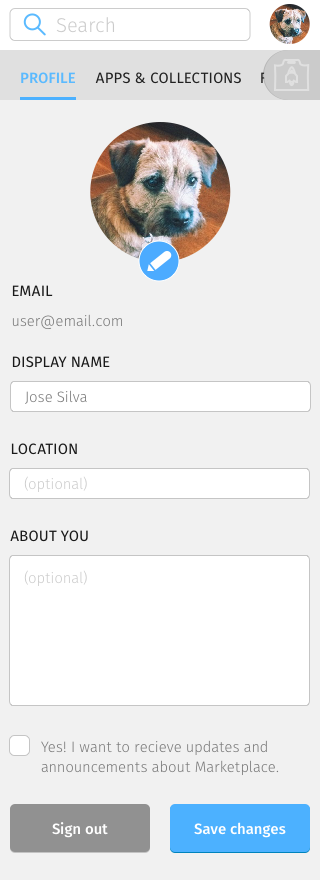
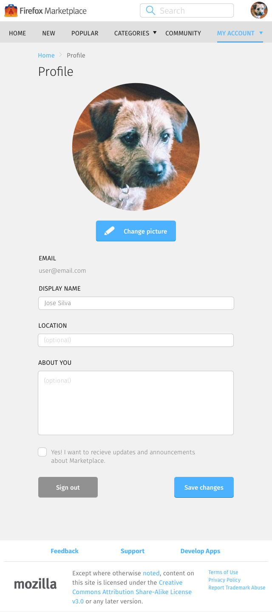
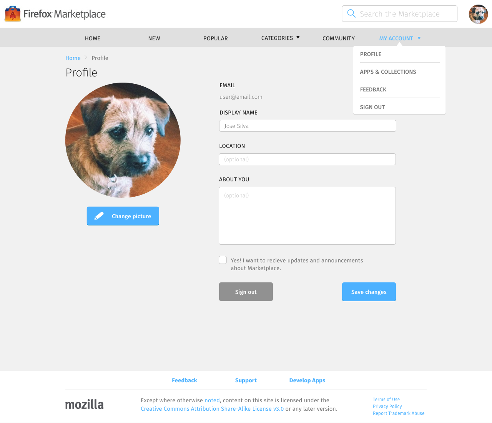

<div class="container">
	<div class="row">
		<div class="col-sm-12 col-md-12 col-lg-12">
			<h1>My Account &rarr; Profile</h1>
			
			<ol class="longText">
  			<li>This page is always shown in edit mode</li>
  			<li>Editable fields
    			  <ul>
    			    <li>Avatar</li>
    			    <li>Display name</li>
    			    <li>Location</li>
    			    <li>About you</li>
    			    <li>Receive updates and announcements about Marketplace</li>
    			  </ul>
  			</li>
			</ol>
			  
		  <h3 class="specItem">Mobile</h3>
		  
		  
		  
		  
		  
      <p class="longText">To access the profile page, select the Settings icon on the navigation bar. Profile is the first menu item on the list, so it will automatically be selected.</p>
		  
		  <h3 class="specItem">Tablet and Desktop</h3>
		  
		  
		  
		  
		  
      <p class="longText">To access the profile page, expand the My Accounts navigation menu item, then select Profile.</p>
			  
		</div>
	</div>
	<!-- Pagination. If you have more than one page, set the multipage variable in the Frontmatter to true. Editing the pagination code happens in /_includes/homePagination.html.
		NOTE: This is currently broken in the Jekyll ver of this template.
		-->
		{% if page.multipage %}
			{% include homePagination.html %}
		{% endif %}
